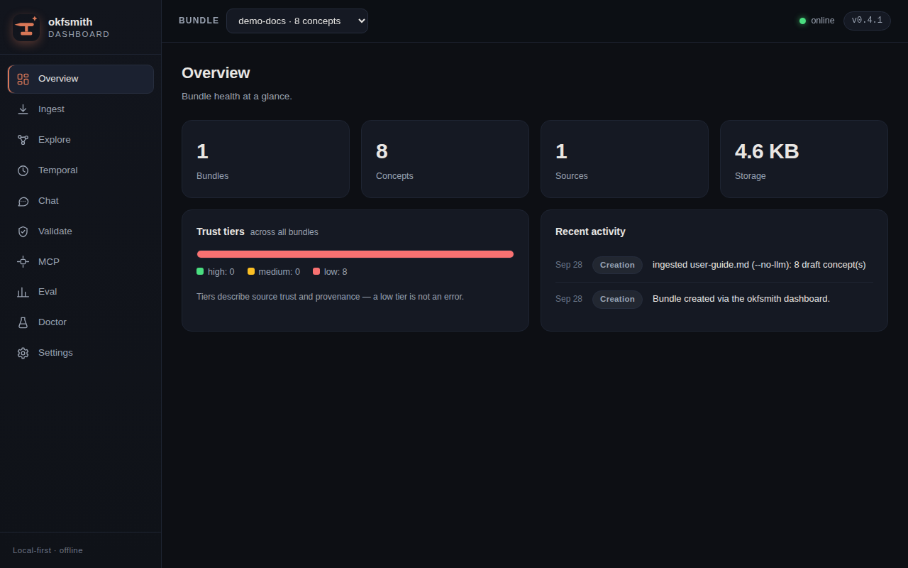
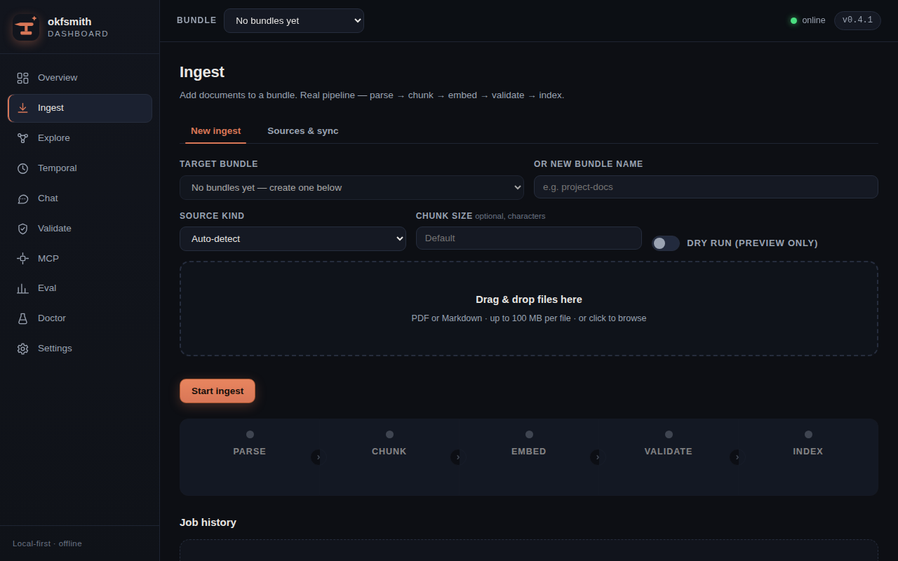
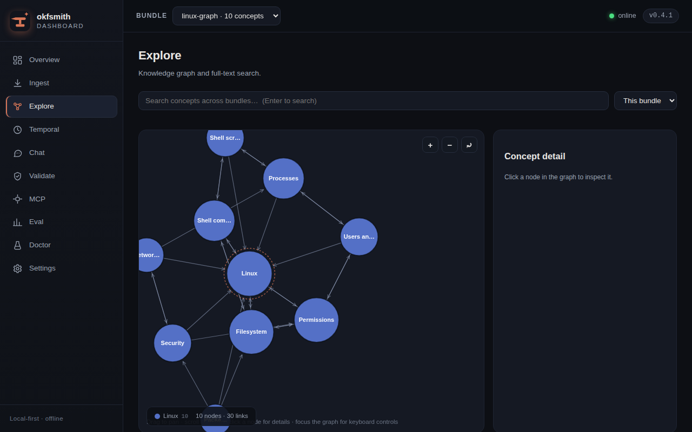
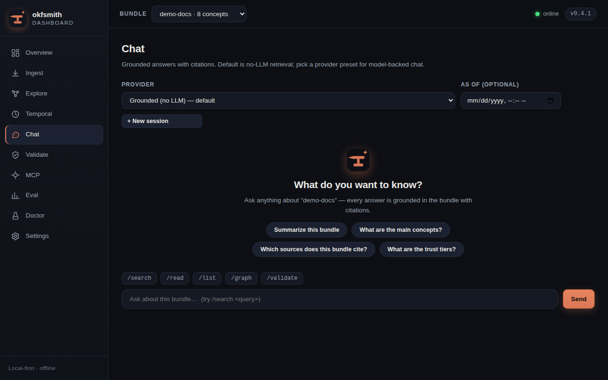

On this page
Getting started
Web dashboard
What it is
The dashboard is a local web UI for everything okfsmith does. Same bundles, same CLI underneath — but visual: drag-and-drop ingest, a clickable knowledge graph, grounded chat with citations, validation, eval, and settings, all in one dark, offline interface.
It covers all ten product areas: Overview, Ingest, Explore, Temporal, Chat, Validate, MCP, Eval, Doctor, Settings.

Launch it
One command, from anywhere:
okfsmith dashboard
This starts a server on http://127.0.0.1:8931 (or the next free port) and prints a one-time URL with a login token. If every port from the one you asked for up to 65535 is taken, it stops with a clear no free loopback port error instead of a traceback — free a port or pass a lower --port. It only ever binds to localhost — nobody on your network can reach it. The token is generated fresh on every launch and printed to your terminal; there is no password to remember and nothing to configure.
okfsmith dashboard --port 9000 # pick a port
okfsmith dashboard --no-open # don't auto-open the browser
To stop it, press Ctrl+C in the terminal. Your bundles stay on disk; nothing is uploaded anywhere, ever.
Overview
The landing page shows your bundles at a glance: concept counts, trust tier mix, recent activity, and validation status. Empty states are honest — a fresh install shows zero bundles and tells you exactly how to create the first one.
Ingest documents
The Ingest page is the fastest way to build a bundle. Drag PDF or Markdown files onto the drop zone (or click to browse), pick a target bundle or name a new one, and hit Start ingest.

You watch the real pipeline run — parse → chunk → embed → validate → index — with per-file progress. It is the same pipeline as okfsmith ingest on the CLI; the dashboard just makes it visible. The Sources & sync tab lists every ingested file with its SHA-256, so you can re-sync changed sources later (see Syncing sources).
Explore the knowledge graph
The Explore page renders your bundle as an interactive knowledge graph: colored clusters of related concepts, labels inside the circles, and arrows showing how concepts link to each other. Bigger circles are hubs — concepts with the most connections.

What you can do:
- Click any node to inspect the concept: its full text, trust tier, sources, and validation state.
- Zoom with the
+/−buttons or your mouse wheel; drag to pan. - Keyboard: arrow keys pan,
+/−zoom,[and]cycle concepts,Enteropens the focused one. - The legend names each cluster by its hub concept.
The graph is built live from your bundle through the API — no mock data. Below is a real example: 20 research PDFs ingested into one bundle. Each node is a paper; clicking one shows its title, source filename, and extracted text.
Chat with citations
The Chat page is the dashboard version of okfsmith chat: ask questions over the selected bundle and get answers grounded in your documents, with citations you can click.

- Every answer cites the exact concepts it used — click a citation to read the source.
- Slash commands (
/search,/read,/help) work like the CLI REPL. - Suggestion chips get you started; the composer stays pinned while you scroll.
- Pick any of the 15 provider presets, or stay fully local with the extractive fallback — no API key required. See Providers & API keys.
The other pages
- Validate — run the OKF §11 conformance suite on a bundle and read every error and warning inline. See Validation.
- Temporal — query any bundle as it was at a past date with as-of time travel. See Temporal model.
- MCP — inspect the MCP server tools and write-back audit log. See MCP server.
- Eval — run golden Q&A sets and read the RAG Triad scores with CI gating. See Evaluating bundles.
- Doctor — environment health checks, same as
okfsmith doctor. - Settings — provider keys, defaults, and dashboard preferences. Keys are stored locally and never displayed back.
Security model
Worth knowing, because a local web server holding your documents should be held to a high standard:
- Localhost only. The server binds to
127.0.0.1and refuses any other interface. There is no flag to expose it — that is deliberate. - Per-launch token. Every
okfsmith dashboardrun generates a new random token; the URL without it gets nothing. Closing the server invalidates it. - Offline UI. All CSS and JavaScript are packaged with okfsmith. The dashboard loads zero third-party resources — no CDN, no fonts, no trackers. Open DevTools and check.
- Your documents never leave the machine, unless you pick a hosted chat provider — in which case only the retrieved snippets for that question are sent, like the CLI.
FAQ
Does the dashboard change my bundles? No. It reads and writes through the same code paths as the CLI. A bundle created in the dashboard is byte-identical to one created with okfsmith ingest.
Can I use it on a remote server? The dashboard is designed for the machine you are sitting at. For remote work, use the CLI over SSH.
The graph is empty / has no edges. Concepts become nodes; edges come from links between documents (Markdown links). A bundle of standalone PDFs with no cross-references renders as unconnected nodes — that is accurate, not a bug. Link your documents together and the clusters appear.